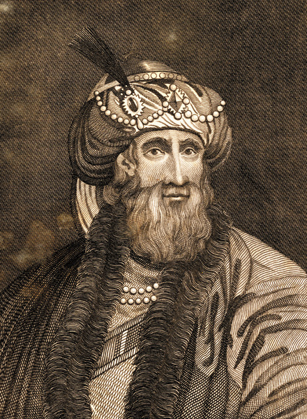

History
The problem is named after Flavius Josephus, a Jewish historian living in the 1st century. According to Josephus' account of the siege of Yodfat, he and his 40 soldiers were trapped in a cave by Roman soldiers. They chose suicide over capture, and settled on a serial method of committing suicide by drawing lots. Josephus states that by luck or possibly by the hand of God, he and another man remained until the end and surrendered to the Romans rather than killing themselves.